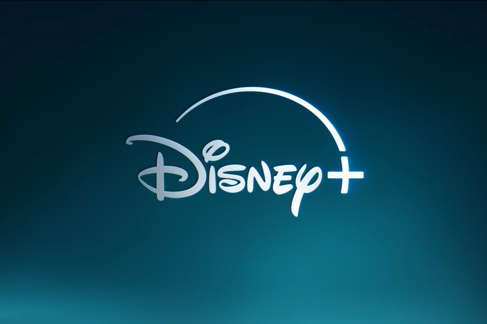

Joe Russo
Nel cuore di una fitta foresta, viveva un piccolo lupo mannaro di nome Antonio. Era noto in tutta la foresta per il suo pelo folto e per i suoi occhi lucenti. Ma c’era qualcosa di speciale in Antonio: era un lupo mannaro che durante la luna piena si trasformava un bambino.
Anche se amava la sua doppia natura, Antonio a volte si sentiva solo. Gli altri lupi non capivano perché diventava un bambino durante la luna piena, e i bambini del villaggio vicino avevano paura di lui perché era un lupo.
Un giorno, durante la luna piena, Antonio decise di avventurarsi nel villaggio.
Camminò per le strade deserte, osservando le case e le persone dentro. Ad un tratto, sentì un pianto provenire da una delle case.
Era una piccola bambina di nome Lucia. Era seduta da sola, piangendo. Antonio, sotto forma di bambino, si avvicinò a lei.
“Anch’io mi sento diverso a volte,” disse.
“Sono un lupo mannaro. Durante la luna piena divento un bambino, come te.”
“Sei un lupo mannaro? Questo è incredibile! Penso che essere diversi ci renda speciali.”
Da quel giorno, Antonio e Lucia divennero i migliori amici. Giocavano insieme durante le notti di luna piena e Antonio la proteggeva nei giorni in cui era un lupo. La foresta e il villaggio non sembravano più posti solitari per nessuno di loro.
Morale della storia: Le nostre differenze non dovrebbero isolarci, ma renderci unici. Trovare qualcuno che capisca la tua unicità può trasformare la solitudine in amicizia.
C’era una volta una stella di mare di nome Valentina che viveva in un mare cristallino. Era una stella di mare di un meraviglioso colore arancione vivace, che aveva una voce davvero incantevole. A Valentina piaceva giocare con i suoi amici pesci e conchiglie, anche se era un po’ più lenta degli altri.
Un giorno, mentre nuotava, notò che il mare non era più pulito come prima. C’erano tanti rifiuti e il mare era diventato molto scuro.“Che brutto!” pensò Valentina preoccupata.
“Come possiamo risolvere questo problema?”.
Valentina parlò con i suoi amici pesci e insieme decisero di organizzare una grande manifestazione per sensibilizzare le persone a non sporcare il mare.
“Ma come possiamo farlo?” chiese la piccola stella di mare.
“Possiamo parlare con tutti gli abitanti della Terra e spiegare loro quanto sia importante mantenere il nostro mare pulito e sicuro per tutti noi.” rispose il granchio.
Così Valentina decise di diventare portavoce del gruppo. Grazie al suo canto dolce e melodioso, riuscì a convincere molte persone ad adottare comportamenti più eco-sostenibili(https://www.treccani.it/vocabolario/ecosostenibile/).
“Dobbiamo gettare i nostri rifiuti nella spazzatura e non in mare! Dobbiamo ridurre l’utilizzo della plastica!” cantò Valentina.
La manifestazione ebbe un grandissimo successo. Con il tempo il mare ricominciò ad essere sempre più pulito e le creature marine tornarono a vivere serenamente.
“Wow, che meraviglia!" disse Valentina felice. “Ce l’abbiamo fatta! Grazie a tutti voi!” E tutti gli animali del mare si abbracciarono felici.
E da quel giorno,Valentina continuò a lavorare per la salvaguardia delle creature marine e del mare stesso.“Non bisogna mai arrendersi” diceva sempre.
“Ognuno di noi, anche se piccolo, può fare la differenza e contribuire a rendere il mondo un posto migliore. Bisogna solo avere il coraggio di parlare e agire per ciò in cui si crede. ”

| Id | Titolo | Regia | Anno uscita | Genere | Piattaforma |
|---|---|---|---|---|---|
| 1 | Pirati dei caraibi - ai confini del mondo | Gore Verbinski | 2007 | Avventura, fantasy |  |
| 2 | The Electric State | Anthony Russo Joe Russo |
2025 | Azione, distopico sci-fi | |
| 3 | The Blues Brothers | John Landis | 1980 | Commedia, avventura |
| Id | Titolo | Regia | Anno uscita | Genere | Piattaforma |
|---|---|---|---|---|---|
| 1 | Pirati dei caraibi - ai confini del mondo | Gore Verbinski | 2007 | Avventura, fantasy | |
| 2 | The Electric State | Anthony Russo Joe Russo |
2025 | Azione, distopico sci-fi | |
| 3 | The Blues Brothers | John Landis | 1980 | Commedia, avventura |
| Id | Titolo | Regia e Anno Uscita | Genere | Piattaforma | |
|---|---|---|---|---|---|
| 1 | Pirati dei Caraibi - Ai confini del mondo | Gore Verbinski | 2007 | Avventura, Fantasy | Disney+ |
| 2 | The Electric State | Anthony e Joe Russo | 2025 | Azione, Distopico, Sci-Fi | Netflix |
| 3 | The Blues Brothers | John Landis | 1980 | Commedia, Avventura | NOW TV |
| ---------------------------------------------------------------------------------------------------------------------------------------------------------------------------------------------------------------------------------------------------------------------------------------------------- | |||||
| Archivio Film Completo | |||||